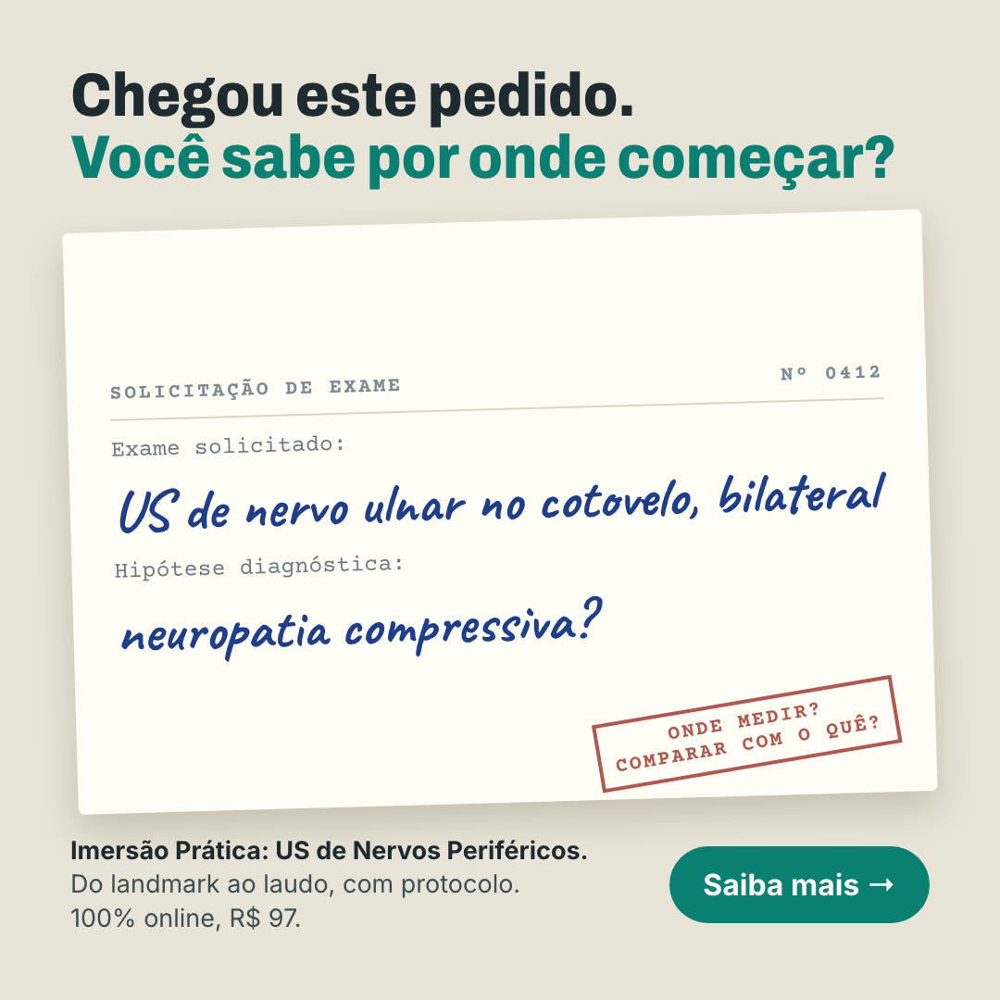
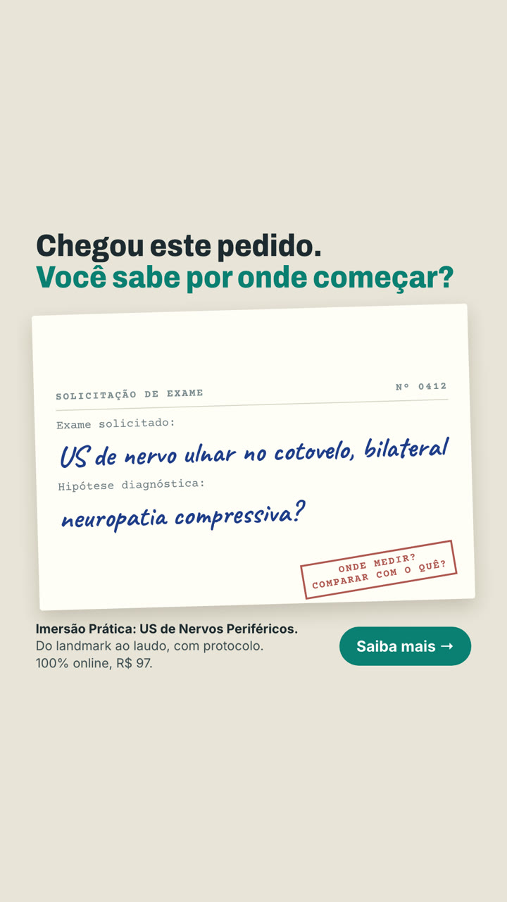

143
Pedido de exame
Abre pela dúvida que todo médico já teve: chega o pedido de US de nervo e não fica claro por onde começar.
Texto do anúncio
Chegou um pedido de US de nervo e bateu a dúvida: onde medir, comparar com o quê, o que escrever no laudo? Na Imersão Prática de US de Nervos Periféricos, o Dr. Glauber Voltan mostra o caminho inteiro: do landmark ao laudo, com protocolo. De R$ 997 por R$ 97. Toque em Saiba mais.
Título: Você sabe por onde começar? · Descrição: 100% online · Botão: Saiba mais